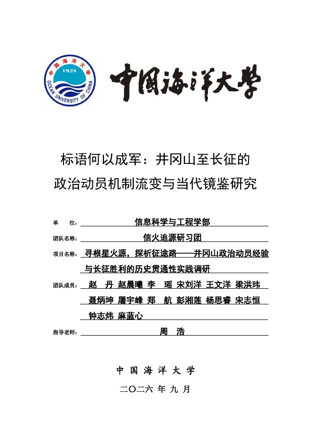
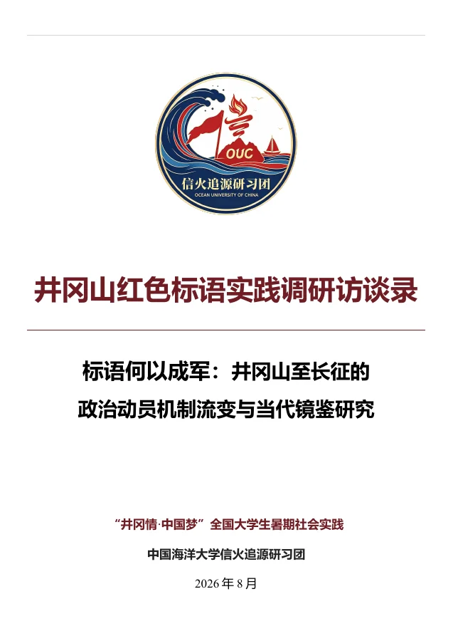

01 / FIELD RESEARCH · 2026.09
标语何以成军：井冈山至长征的政治动员机制流变与当代镜鉴研究
以红色标语为观察窗口，将井冈山的实地遗存、五种身份的口述材料与长征时期文献相互参证，考察动员主题、传播空间和对象如何随革命任务变化。

04 / RESEARCH OUTPUTS
标语研究与学术成果
从井冈山墙体标语出发，以现场遗存、口述访谈和文献对照追问“标语何以成军”。先看研究脉络，再翻阅完整报告与访谈录。
两份完整文档构成这项研究的主体：调研报告提出问题与分析框架，访谈录保存来自现场的不同声音。
01 / FIELD RESEARCH · 2026.09
以红色标语为观察窗口，将井冈山的实地遗存、五种身份的口述材料与长征时期文献相互参证，考察动员主题、传播空间和对象如何随革命任务变化。

02 / ORAL HISTORY · 2026.08
五场访谈连接党史教育、文博工作、革命后代、乡土保存与基层实践，为标语背后的制度、记忆和现实行动留下可追溯的口述材料。

报告采用标语文本分析、历史比较与多源史料互证。三类材料各有作用，也各有需要核验的边界。
记录原文、书写载体、地点与保存状态，保留标语所在的空间情境。
查看标语档案 ↗补充标语发现、保存和传播的地方记忆；单一口述仍需其他材料互证。
认识五种视角 ↓把田野材料放入政策、制度与历史时序中，核对后期转录和残损文本。
阅读研究方法 ↓研究依据：调研报告第 3.2、3.3 节。实物、口述与文献相互参证，避免仅凭一条标语推断动员效果。
以下为报告第 5 章与第 7.1 节的提要，完整论证请见原文。
宣传重点随政治任务和军事环境调整。
两种传播形态并存，主次关系发生变化。
宣传话语回应不同地区与人群的现实处境。
访谈录从课堂、博物馆、革命家庭、标语老宅和基层乡村出发，记录墙上文字如何进入人的记忆与行动。
标语记忆与井冈山精神的承继
宣传兵制度、群众利益与纪律实践
《长征组歌》与革命信念的记忆
老宅墙面的反复书写与保存
红色记忆与当代乡村发展
人物、身份与日期据《井冈山红色标语实践调研访谈录》目录及附录整理；访谈原文和现场照片见完整文件。